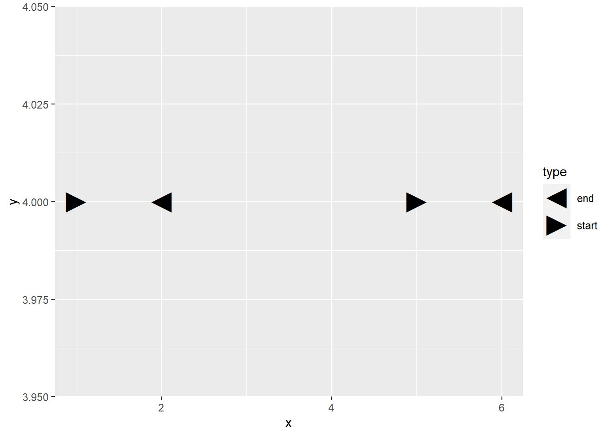
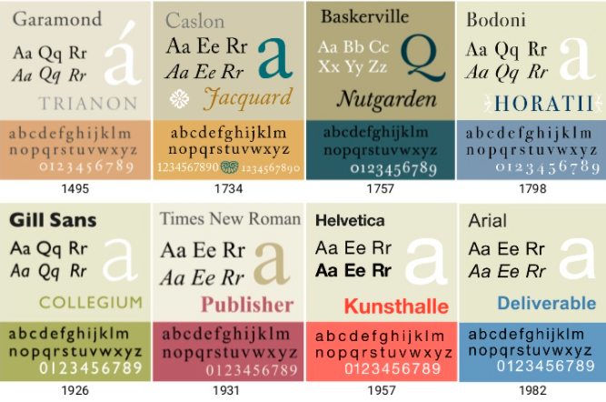

1 현지화/세계화1
현지화(Localization)은 세계화(internationalization)의 동전의 양면과 같은 것이다. 세계화를 영어로 internationalization으로 길기 때문에 i18n으로 줄여서 현지화는 영어로 Localization으로 길기 때문에 동일한 로직으로 L10N으로 줄여 표현한다. 현지화에 해당되는 사항은 다음이 포함된다.
- 문자 집합(Character Set)
- 통화(Currency)
- 날씨 온도(\(^{\circ} C / ^{\circ} F\))
- 길이 (킬로미터, 마일)
- 날짜와 시간 (Date and Time)
- 키보드 배열
- 왼쪽에서 오른쪽으로 혹은 위에서 아래 혹은 우측에서 좌측으로 텍스트 작성과 문서 양식(Text Directions and Layouts)
1.1 인코딩 (Encoding)
문자 인코딩(character encoding) 줄여서 인코딩은 사용자가 입력한 문자나 기호들을 컴퓨터가 이용할 수 있는 신호로 만드는 것을 말한다. 넓은 의미의 컴퓨터는 이러한 신호를 입력받고 처리하는 기계를 뜻하며, 신호 처리 시스템을 통해 이렇게 처리된 정보를 사용자가 이해할 수 있게 된다.
All text has a character encoding.
When things go wrong, start by asking what the encoding is, what encoding you expected it to be, and whether the bytes match the encoding.
- Code Unit: A unit of physical storage and information interchange
- Glyph: A single shape (in text)
- Grapheme: A single visual unit of text: the smallest abstract unit of meaning in a writing system
- Character: A single logical unit of text
- Character Set: A set of characters
- Coded Character Set: A set of characters in which each character is assigned a numeric identifier.
- Character Encoding Form: Mpas code points to code units
1.2 인코딩 문제23
문자 인코딩(Encoding) 관련하여 크게 3가지 흔한 문제가 있다.
- 두부(Tofu): 텅빈 사각형 상자로 컴퓨터 입장에서 해당 문자가 뭔지는 알겠는데 화면에 무엇을 출력할지는 모른다는 것을 나타냄.
- 문자깨짐(Mojibake, 文字化け): 일본어에서는 문자 깨짐을 모지바케라고 부름. 특정 인코딩에서 텍스트를 다른 인코딩으로 해석할 때 문자 깨짐이 발생.
- 의문부호(Question Marks): 보통 특정 문자에서 다른 문자로 텍스트를 변환할 때 발생함.

1.3 유니코드 변환기
rlang 팩키지 chr_unserialise_unicode() 함수를 사용하면 유니코드 코드 포인트(code point)를 읽을 수 있는 문자로 변환시킬 수 있다.
# 한자 幸(다행 행)
ascii <- "<U+5E78>"
rlang::chr_unserialise_unicode(ascii)[1] "幸"# Hello
hello <- "<U+0048> <U+0065> <U+006C> U+006C <U+006F>"
rlang::chr_unserialise_unicode(hello)[1] "H e l U+006C o"# 대한민국
korea <- "<U+B300><U+D55C><U+BBFC><U+AD6D>"
rlang::chr_unserialise_unicode(korea)[1] "대한민국"2 디지털 타이포그래피4
2.1 글꼴 확장자
글리프(Glyph) 경계를 정의하는데 직선과 곡선으로 이루어진 벡터 이미지를 모아둔 것을 벡터 글꼴(Vector Font)라고 한다. Type 1, Type 3 포스트스크립 폰트(Postscript Font)는 3차 베지어 곡선, TrueType Fonts는 2차 베지어 곡선을 제작되었다.
- Type 1 (
.pfm,.pfb): 3차 베지어 곡선으로 표현된 글리프(Glyph) 형태 - True Type (
.ttf): 2차 베지어 곡선으로 표현된 글리프 형태 - Open Type (
.otf): 2차 혹은 3차 베지어 곡선으로 표현된 글리프 - 웹 오픈 폰트 (.woff): True Type 혹은 Open Type 을 압축
2.2 프리타입(FreeType)5
프리타입(FreeType, 번역: 자유 활자)은 C 언어로 작성된 소프트웨어 라이브러리이며 글꼴 래스터라이제이션 엔진을 제공한다. 문자열들을 비트맵으로 래스터 처리하며 다른 글꼴 관련 기능에 대한 지원을 제공한다. 프리타입은 텍스트 레이아웃이나 그래픽 처리와 같은 더 높은 수준의 기능을 수행하기 위한 API를 제공하지 않아 이를테면 렌더링은 지원하지 않지만, 단순하면서도 사용하기 쉽고 통일된 사용자 인터페이스를 제공하여 글꼴 파일의 내용에 접근할 수 있으므로 이러한 작업들을 매우 단순하게 만들어 준다.
2.3 텍스트 성형
텍스트 성형(Text Shaping)은 유니코드와 같은 문자를 입력받아 글리프(Glyph) 형상을 만들어내는 것이다. HarfBuzz가 가장 좋은 성능을 내는 것으로 알려져있으며 ragg 팩키지의 C 라이브러리를 textshaping에 구현하여 R에서도 활용할 수 있게 되었다.
3 주요 용어 정리67
typography: 타이포그래피(Typography)는 활자 서체의 배열을 말하는데, 활자의 서체나 글자 배치 따위를 구성하고 표현하는 일을 가리키는 용어. 활판술, 조판이라고 번역된다.- ‘활자’를 의미하는 ’Type’와’-술’을 의미하는 접미사 ’Graphy’의 합성어이다. 즉, 영어 단어
typography는 그리스어의 두 단어 τύπος(typos, 표시)와 γράφω(grapho, 쓰다)에서 유래된 조어이다.
- ‘활자’를 의미하는 ’Type’와’-술’을 의미하는 접미사 ’Graphy’의 합성어이다. 즉, 영어 단어
black letter
폰트(font): 사전적 의미로 글자란 말을 적는 일정한 체계의 부호로 숫자와 문장부호가 포함. 영어로 letter, type, character, font가 같은 뜻을 갖고 있는데 좀더 물리적인 속성을 담고 있어 타입페이스(
typeface)란 바로 이 금속활자의 찍히는 얼굴 면, 그 모양을 말하는 것임. 또한, 폰트(font)란 통일된 구조와 속성을 가진 한 벌의 기호나 글자를 지칭하며, 요즘은 같은 스타일을 가진 폰트 모두를 지칭할 때 같은 스타일의 폰트 묶음인 타입패밀리(type family)가 있음.이음자(Ligatures): 둘 이상의 글자를 자연스럽게 결합하는 것
헬베티카(Helvetica) 타입 패밀리: 중량, 획 굵기에 관해서는 가느다랗고 경쾌한 라이트(light)부터 레귤러(regular), 미디엄(medium), 두껍고 무거운 볼드(bold) 등이 있고 글자 폭에 관해서는 익스펜디드(expanded), 레귤러(regular), 콘덴시드(condensed) 등이 있고, 이 변화 폭은 엑스트라 라이트, 울트라 볼드, 울트라 익스펜디드, 엑스트라 콘덴시드 등으로 더 나뉘기도 한다.
typeface:scripts:noto: 노토(Noto)는 유니코드 표준으로 인코딩된 모든 언어를 커버하기위한 폰트 패밀리로 구글에서 개발시작했다. 이 글꼴은 여러 언어나 문자를 전체적인 시각적 조화(예를 들면, 서로 맞는 높이와 획의 굵기 등)를 이루는 것을 목표로 Apache License 2.0로 배포된다. 컴퓨터에서 표시 못하는 문자가 있을 때 문자 대신에 조그만 사각형(□)이 표시되는 일이 많이 있는데 이를 흔히 “두부”(tofu)라고 부르며, 구글은 Web 상에서 이를 없애기 위해서 Noto(No Tofu) 폰트를 개발했다.
unicode: 유니코드(Unicode)는 전 세계의 모든 문자를 컴퓨터에서 일관되게 표현하고 다룰 수 있도록 설계된 산업 표준이며, 유니코드 협회(Unicode Consortium)가 제정한다. 이 표준에는 ISO 10646 문자 집합, 문자 인코딩, 문자 정보 데이터베이스, 문자들을 다루기 위한 알고리즘 등을 포함하고 있다. 유니코드의 기원은 1987년으로 거슬러 올라가며, 이 때 제록스의 조 베커와 애플의 리 콜린스, 마크 데이비스가 통일된 문자 집합을 만드는 것을 탐구하기 시작하였다. 1988년 조 베커는 유니코드라는 이름의 국제/다언어 문자 인코딩 시스템(international/multilingual text character encoding system, tentatively called Unicode)를 위한 초안을 출판하였다.UTF-8 (Unicode Transformation Format, RFC 3629): 유니코드를 위한 가변 길이 문자 인코딩 방식 중 하나로, 켄 톰프슨과 롭 파이크가 만들었다. UTF-8 인코딩은 유니코드 한 문자를 나타내기 위해 1바이트에서 4바이트까지를 사용한다. 예를 들어서, U+0000부터 U+007F 범위에 있는 ASCII 문자들은 UTF-8에서 1바이트만으로 표시된다.
typography: 타이포그래피(Typography)는 활자 서체의 배열을 말하는데, 활자의 서체나 글자 배치 따위를 구성하고 표현하는 일을 가리키는 용어.- ‘활자’를 의미하는 ’Type’와’-술’을 의미하는 접미사 ’Graphy’의 합성어이다. 즉, 영어 단어
typography는 그리스어의 두 단어 τύπος(typos, 표시)와 γράφω(grapho, 쓰다)에서 유래된 조어이다.
- ‘활자’를 의미하는 ’Type’와’-술’을 의미하는 접미사 ’Graphy’의 합성어이다. 즉, 영어 단어
black letter
폰트(font): 사전적 의미로 글자란 말을 적는 일정한 체계의 부호로 숫자와 문장부호가 포함. 영어로 letter, type, character, font가 같은 뜻을 갖고 있는데 좀더 물리적인 속성을 담고 있어 타입페이스(
typeface)란 바로 이 금속활자의 찍히는 얼굴 면, 그 모양을 말하는 것임. 또한, 폰트(font)란 통일된 구조와 속성을 가진 한 벌의 기호나 글자를 지칭하며, 요즘은 같은 스타일을 가진 폰트 모두를 지칭할 때 같은 스타일의 폰트 묶음인 타입패밀리(type family)가 있음.이음자(Ligatures): 둘 이상의 글자를 자연스럽게 결합하는 것
헬베티카(Helvetica) 타입 패밀리: 중량, 획 굵기에 관해서는 가느다랗고 경쾌한 라이트(light)부터 레귤러(regular), 미디엄(medium), 두껍고 무거운 볼드(bold) 등이 있고 글자 폭에 관해서는 익스펜디드(expanded), 레귤러(regular), 콘덴시드(condensed) 등이 있고, 이 변화 폭은 엑스트라 라이트, 울트라 볼드, 울트라 익스펜디드, 엑스트라 콘덴시드 등으로 더 나뉘기도 한다.
서예(Calligraphy): 사전적 의미로 글씨를 붓으로 쓰는 예술, 컴퓨터 느낌으로 ‘손으로 그린 그림문자’, 쉽게 말해 ’손글씨’를 뜻함. 즉, 기계가 아닌 손으로 그려진 글씨라는 점에서 기존 타이포그래피와 차별된다. 문자를 그대로 나열하면 되는 영어 알파벳과 달리 자음과 모음의 결합으로 이뤄져 더 복잡한 형태를 갖게 되어, 하나의 글자를 개발하는데 더 많은 품이 들기 때문에 상대적으로 타이포그래피보다 서예가 더 우리나라에서 발달했다. 한글을 디지털로 표현하는 것보다는 손으로 직접 쓰는 아날로그 방식인 캘리그래피가 상대적으로 디자인하기 더 쉽기 때문에 더 발달하게 된 것이다.8
글리프(
glyphs) 형태: 문자 골격을 표현하는 형태를 정의하기 위하여 사용된 문자 골격 표현의 정보 집합. 규범 표기는 미확정이다.ascender:descender:tracking:hinting: 래스터 격자(rasterized grid)에 줄맞추는 과정kerning: 문자사이에 공간을 조정하는 과정shaping:weight:slant:
 ## 그래픽 장치 {#graphics-device}
## 그래픽 장치 {#graphics-device}
4 폰트 역사
- Times New Roman (1932): The Times of London Newspaper
- Bookman Old Style (1858): Alexander Phemister in Edinburgh,Scotland
- Courier New (1955): IBM에 의해 시작된 모노스페이스(Monospaced Font) 1955년 Howard Kettler가 제작. 코딩에 적합
- Trebuchet MS: 1996년 마이크로소프트가 크기가 작고 저해상도에서 가독성이 높게 개발한 폰트.
- Comic Sans MS (1994): Comic Strips에 기반하여 윈도우 95에 포함되어 배포됨.
- Webdings (1997): 웹 디자이너의 요구에 의해서 웹페이지에 글자를 그림 문자로 출력하는 폰트. ’딩뱃(Dingbat)’이라는 특수글꼴중 하나로 옛날 조판을 할 때 쓰는 장식용 문자나 공백을 가리키는 말이다.
4.1 웹딩체
윈딩(Windings), 웹딩체(Webdings)는 장식용 혹은 그림 문자를 표현하기 위해 과거 많이 사용되었다면 현재는 유니코드에 의해 많은 부분 대체되거나 이모지로 대체되었다.
library(extrafont)
library(tidyverse)
loadfonts()
mydata <- data.frame(x = c(1, 2, 5, 6),
y = c(4, 4, 4, 4),
type = c("start", "end", "start", "end"),
symbols = c(4, 3, 4, 3))
# ggplot(data = mydata) +
# geom_text(aes(x, y, label = symbols),
# size = 8, family = "Webdings")
ggplot(data = mydata) +
geom_point(data = mydata, aes(x, y, shape = type), size = 8) +
scale_shape_manual(values=c("\u25C4","\u25BA")) 
4.2 역사적 유명 폰트


Carol Oliver, “Internationalization Part I: Unicode and Character Encodings”↩︎
OCTOBER 8, 2003 by JOEL SPOLSKY, “The Absolute Minimum Every Software Developer Absolutely, Positively Must Know About Unicode and Character Sets (No Excuses!)”, JOEL ON SOFTWARE↩︎
ROUGIER (INRIA) & B. ESFAHBOD (GOOGLE), “Digital typography”, SIGGRAPH 2018↩︎
Alexis Beingessner (September 28th, 2019), “Text Rendering Hates You”↩︎
데이터 과학자 이광춘 저작
kwangchun.lee.7@gmail.com